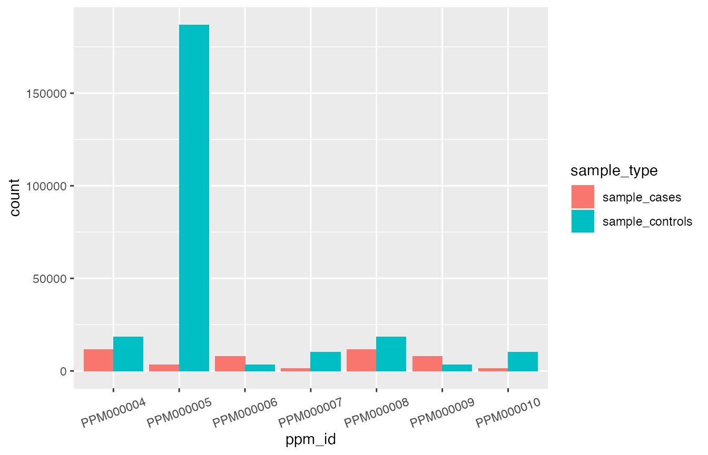

pgs-scores-mavaddat.RmdLet us assume that you are a breast cancer researcher, and that you are interested in studying the screening and prevention of this disease. Now, imagine you have just recently noticed a new publication that claims to have developed a set of new polygenic risk scores that are both powerful and reliable predictors of breast cancer risk, e.g., Mavaddat et al. (2018).
Perhaps now you would like to investigate a bit more about these new polygenic risk scores to assess their potential application. You know that the performance of these scores is dependent on various aspects, such as study design, participant demographics, case definitions, and covariates that have been adjusted for. In general, to access this information, you will have to carefully read the paper searching for these details, and usually get them from the supplementary material, with all the extra effort it takes.
However, if these scores have already been indexed and manually curated by the PGS Catalog team, then you can benefit by using this free and open resource to quickly gather relevant data about these scores. And if you happen to be an R user, then you can use the R Package quincunx and its retrieval functions to fetch the polygenic score metadata associated with the publication of interest from the PGS Catalog REST API server. This is what we will be doing next.
An alternatively, albeit more direct, route to get this publication by Mavaddat et al. (2018) could have been to query for publications directly by the corresponding PubMed ID (30554720):
pub_by_pmid_30554720 <- get_publications(pubmed_id = '30554720')
pub_by_pmid_30554720
#> An object of class "publications"
#> Slot "publications":
#> # A tibble: 1 x 8
#> pgp_id pubmed_id publication_date publication title author_fullname doi
#> <chr> <chr> <date> <chr> <chr> <chr> <chr>
#> 1 PGP00… 30554720 2018-12-13 Am J Hum G… Poly… Mavaddat N 10.1…
#> # … with 1 more variable: authors <chr>
#>
#> Slot "pgs_ids":
#> # A tibble: 15 x 3
#> pgp_id pgs_id stage
#> <chr> <chr> <chr>
#> 1 PGP000002 PGS000004 development
#> 2 PGP000002 PGS000005 development
#> 3 PGP000002 PGS000006 development
#> 4 PGP000002 PGS000007 development
#> 5 PGP000002 PGS000008 development
#> 6 PGP000002 PGS000009 development
#> 7 PGP000002 PGS000001 evaluation
#> 8 PGP000002 PGS000002 evaluation
#> 9 PGP000002 PGS000003 evaluation
#> 10 PGP000002 PGS000004 evaluation
#> 11 PGP000002 PGS000005 evaluation
#> 12 PGP000002 PGS000006 evaluation
#> 13 PGP000002 PGS000007 evaluation
#> 14 PGP000002 PGS000008 evaluation
#> 15 PGP000002 PGS000009 evaluationTo get an overview of the possible search criteria for get_publications you can use the help function within R.
?get_publications
# or alternatively
help("get_publications")Now that we have found that our publication of interest exists in the PGS Catalog, with identifier PGP000002, we can check now which polygenic risk scores are annotated in the Catalog. Polygenic scores (PGS) in the PGS Catalog are indexed by an unique accession identifier of the form: “PGS000000” (“PGS” followed by six digits).
To get all PGS identifiers associated with Mavaddat’s publication we turn to the second table pgs_ids that maps publication identifiers (PGP) to PGS identifiers:
pub_by_pmid_30554720@pgs_ids
#> # A tibble: 15 x 3
#> pgp_id pgs_id stage
#> <chr> <chr> <chr>
#> 1 PGP000002 PGS000004 development
#> 2 PGP000002 PGS000005 development
#> 3 PGP000002 PGS000006 development
#> 4 PGP000002 PGS000007 development
#> 5 PGP000002 PGS000008 development
#> 6 PGP000002 PGS000009 development
#> 7 PGP000002 PGS000001 evaluation
#> 8 PGP000002 PGS000002 evaluation
#> 9 PGP000002 PGS000003 evaluation
#> 10 PGP000002 PGS000004 evaluation
#> 11 PGP000002 PGS000005 evaluation
#> 12 PGP000002 PGS000006 evaluation
#> 13 PGP000002 PGS000007 evaluation
#> 14 PGP000002 PGS000008 evaluation
#> 15 PGP000002 PGS000009 evaluationPlease note that there are 9 unique scores, both from the development and the evaluation stages, meaning that this paper published new polygenic scores (development stage), and tested them (evaluation stage). But this paper has also evaluated 3 other polygenic scores previously developed (and firstly published in another publication by the same author).
This distinction between stages is important because when we query the database for the scores from all the pgp_ids present in this publication, only the newly developed ones (from the development stage) will be retrieved. (See below: section about the get_scores() function).
# Newly published PGS scores (development stage)
pub_by_pmid_30554720@pgs_ids %>% dplyr::filter(stage == "development")
#> # A tibble: 6 x 3
#> pgp_id pgs_id stage
#> <chr> <chr> <chr>
#> 1 PGP000002 PGS000004 development
#> 2 PGP000002 PGS000005 development
#> 3 PGP000002 PGS000006 development
#> 4 PGP000002 PGS000007 development
#> 5 PGP000002 PGS000008 development
#> 6 PGP000002 PGS000009 development
# All PGS scores evaluated (evaluation stage)
pub_by_pmid_30554720@pgs_ids %>% dplyr::filter(stage == "evaluation")
#> # A tibble: 9 x 3
#> pgp_id pgs_id stage
#> <chr> <chr> <chr>
#> 1 PGP000002 PGS000001 evaluation
#> 2 PGP000002 PGS000002 evaluation
#> 3 PGP000002 PGS000003 evaluation
#> 4 PGP000002 PGS000004 evaluation
#> 5 PGP000002 PGS000005 evaluation
#> 6 PGP000002 PGS000006 evaluation
#> 7 PGP000002 PGS000007 evaluation
#> 8 PGP000002 PGS000008 evaluation
#> 9 PGP000002 PGS000009 evaluationIf we knew, before hand, that PGP000002 was associated with Mavaddat’s publication, we could have also taken advantage of the neat function pgp_to_pgs() to quickly get all the associated polygenic score ids:
pgp_to_pgs('PGP000002')
#> # A tibble: 15 x 3
#> pgp_id pgs_id stage
#> <chr> <chr> <chr>
#> 1 PGP000002 PGS000004 development
#> 2 PGP000002 PGS000005 development
#> 3 PGP000002 PGS000006 development
#> 4 PGP000002 PGS000007 development
#> 5 PGP000002 PGS000008 development
#> 6 PGP000002 PGS000009 development
#> 7 PGP000002 PGS000001 evaluation
#> 8 PGP000002 PGS000002 evaluation
#> 9 PGP000002 PGS000003 evaluation
#> 10 PGP000002 PGS000004 evaluation
#> 11 PGP000002 PGS000005 evaluation
#> 12 PGP000002 PGS000006 evaluation
#> 13 PGP000002 PGS000007 evaluation
#> 14 PGP000002 PGS000008 evaluation
#> 15 PGP000002 PGS000009 evaluationTo dive into the metadata about these polygenic scores, we use the quincunx function get_scores():
mavaddat2018_scores <- get_scores(pubmed_id = "30554720")
slotNames(mavaddat2018_scores)
#> [1] "scores" "publications" "samples" "demographics" "cohorts"
#> [6] "traits"This returns the S4 object scores which contains six tables (slots): scores, publications, samples, demographics, cohorts, traits.
You can quickly check all variables from each table by consulting quincunx cheatsheet.
A description of each variable is annotated in the scores object help page that can be accessed with class?scores.
The S4 scores object mavaddat2018_scores starts with a table named scores that lists each score in one row. All scores are identified by a PGS identifier (pgs_id column). Note that, as previously explained, only the polygenic scores newly developed in this publication (developmental stage) are retrieved, and not all the PGS scores that were evaluated in this publication.
In addition, scores can have a name (pgs_name column). This may be the name assigned by authors of the source publication, or a name assigned by a PGS Catalog curator in order to identify that particular score throughout the curating process.
mavaddat2018_scores@scores[c('pgs_id', 'pgs_name')]
#> # A tibble: 6 x 2
#> pgs_id pgs_name
#> <chr> <chr>
#> 1 PGS000004 PRS313_BC
#> 2 PGS000005 PRS313_ERpos
#> 3 PGS000006 PRS313_ERneg
#> 4 PGS000007 PRS3820_BC
#> 5 PGS000008 PRS3820_ERpos
#> 6 PGS000009 PRS3820_ERnegFrom the PGS names we can already see the presence of the suffixes “ERpos” and “ERneg”, suggestive of specialized polygenic risk scores for estrogen-receptor positive and negative samples.
mavaddat2018_scores@scores['scoring_file']
#> # A tibble: 6 x 1
#> scoring_file
#> <chr>
#> 1 http://ftp.ebi.ac.uk/pub/databases/spot/pgs/scores/PGS000004/ScoringFiles/PGS…
#> 2 http://ftp.ebi.ac.uk/pub/databases/spot/pgs/scores/PGS000005/ScoringFiles/PGS…
#> 3 http://ftp.ebi.ac.uk/pub/databases/spot/pgs/scores/PGS000006/ScoringFiles/PGS…
#> 4 http://ftp.ebi.ac.uk/pub/databases/spot/pgs/scores/PGS000007/ScoringFiles/PGS…
#> 5 http://ftp.ebi.ac.uk/pub/databases/spot/pgs/scores/PGS000008/ScoringFiles/PGS…
#> 6 http://ftp.ebi.ac.uk/pub/databases/spot/pgs/scores/PGS000009/ScoringFiles/PGS…The column scoring_file contains the URL for the FTP location containing the corresponding PGS scoring files. PGS scoring files are the text files provided by the PGS Catalog team containing the source data that you can use to compute polygenic scores for particular individuals, i.e. that allow you to apply these scores to your individual samples. Learn more about scoring files in vignette("pgs-scoring-file"). For a quick consultation of the file format of PGS scoring files you may also check the second page of quincunx cheatsheet.
As an additional feature, quincunx allows you to download the relevant PGS scoring files directly into R using the function read_scoring_file(), making the data immediately available in R for further analysis.
mavaddat2018_scores@scores[c('pgs_id', 'matches_publication')]
#> # A tibble: 6 x 2
#> pgs_id matches_publication
#> <chr> <lgl>
#> 1 PGS000004 TRUE
#> 2 PGS000005 TRUE
#> 3 PGS000006 TRUE
#> 4 PGS000007 TRUE
#> 5 PGS000008 TRUE
#> 6 PGS000009 TRUEThe column matches_publication is a logical value indicating whether the published polygenic score is exactly the same as the one present in the PGS scoring file provided by the PGS Catalog. In this case all of the 6 scores are provided exactly as published (all values are “TRUE”).
Other columns in the scores table hold relevant information.
mavaddat2018_scores@scores[c('pgs_name', 'pgs_method_name', 'pgs_method_params', 'n_variants', 'assembly')]
#> # A tibble: 6 x 5
#> pgs_name pgs_method_name pgs_method_para… n_variants assembly
#> <chr> <chr> <chr> <int> <chr>
#> 1 PRS313_BC Hard-Thresholding Stepwise F… p < 10^-5 313 GRCh37
#> 2 PRS313_ERp… Hard-Thresholding Stepwise F… p < 10^-5 313 GRCh37
#> 3 PRS313_ERn… Hard-Thresholding Stepwise F… p < 10^-5 313 GRCh37
#> 4 PRS3820_BC LASSO penalized regression p < 0.001 3820 GRCh37
#> 5 PRS3820_ER… LASSO penalized regression p < 0.001 3820 GRCh37
#> 6 PRS3820_ER… LASSO penalized regression p < 0.001 3820 GRCh37For example, columns such as pgs_method_name and pgs_method_params provide extra details about the PGS development method. Finally, n_variants informs about the number of variants comprising each polygenic risk score, and assembly indicates the genome assembly version used.
The scores S4 object contains a table dedicated to the source publications used to collect the score(s) retrieved. In this case, it is not surprising that all PGS scores map to the same publication identifier, i.e., PGP000002, as that was our starting point.
mavaddat2018_scores@publications[c('pgs_id', 'pgp_id', 'publication_date', 'author_fullname')]
#> # A tibble: 6 x 4
#> pgs_id pgp_id publication_date author_fullname
#> <chr> <chr> <date> <chr>
#> 1 PGS000004 PGP000002 2018-12-13 Mavaddat N
#> 2 PGS000005 PGP000002 2018-12-13 Mavaddat N
#> 3 PGS000006 PGP000002 2018-12-13 Mavaddat N
#> 4 PGS000007 PGP000002 2018-12-13 Mavaddat N
#> 5 PGS000008 PGP000002 2018-12-13 Mavaddat N
#> 6 PGS000009 PGP000002 2018-12-13 Mavaddat NThe third table (slot) of the scores S4 object pertains to the samples used for the development of the PGS scores.
There are a total of 15 columns with metadata details about each sample. Each row corresponds to one sample associated with the polygenic scores, and the combination of values of the first two columns, pgs_id and sample_id, uniquely identifies each sample in this table. All samples shown in the samples table of a scores object are annotated with a stage, that can take two values: "discovery" or "training".
The "discovery" samples are typically used in determining the variants that are afterwards used for polygenic score development. These variants originate typically from Genome-Wide Association Studies (GWAS). Hence, these samples might be linked to the GWAS Catalog. If that is the case, this information is provided in the column study_id, indicating the GWAS Catalog accession identifier. You may find more information about these GWAS studies by using the function gwasrapidd::get_studies() from the gwasrapidd R package that we developed previously (described here).
The "training" samples are those that have been used for the training of a particular polygenic score. Together, these two stages (discovery and training) are referred to as development, in contrast to the later testing phase of the polygenic scores, i.e., the evaluation phase (or stage).
If this sounds confusing check our cheatsheet, section PGS Construction Process, second page.
dplyr::glimpse(mavaddat2018_scores@samples)
#> Rows: 18
#> Columns: 15
#> $ pgs_id <chr> "PGS000004", "PGS000004", "PGS000004"…
#> $ sample_id <int> 1, 2, 3, 1, 2, 3, 1, 2, 3, 1, 2, 3, 1…
#> $ stage <chr> "discovery", "training", "training", …
#> $ sample_size <int> 139274, 158648, 10444, 139274, 87368,…
#> $ sample_cases <int> NA, 88916, 5159, NA, 55391, 4233, NA,…
#> $ sample_controls <int> NA, 69732, 5285, NA, 31977, 926, NA, …
#> $ sample_percent_male <dbl> NA, 0, 0, NA, 0, 0, NA, 0, 0, NA, 0, …
#> $ phenotype_description <chr> NA, "Invasive breast cancer-affected"…
#> $ ancestry <chr> "European", "European", "European", "…
#> $ ancestry_description <chr> "NR", NA, NA, "NR", NA, NA, "NR", NA,…
#> $ ancestry_country <chr> "Canada, U.S., Australia, Belgium, Fr…
#> $ ancestry_additional_description <chr> NA, NA, NA, NA, NA, NA, NA, NA, NA, N…
#> $ study_id <chr> "GCST004988", NA, NA, "GCST004988", N…
#> $ pubmed_id <chr> "29059683", NA, NA, "29059683", NA, N…
#> $ cohorts_additional_description <chr> NA, "Training Cohort", "Validation Co…The PGS Catalog provides brief records of samples sizes (total number, number of cases, and number of controls):
mavaddat2018_scores@samples[1:6]
#> # A tibble: 18 x 6
#> pgs_id sample_id stage sample_size sample_cases sample_controls
#> <chr> <int> <chr> <int> <int> <int>
#> 1 PGS000004 1 discovery 139274 NA NA
#> 2 PGS000004 2 training 158648 88916 69732
#> 3 PGS000004 3 training 10444 5159 5285
#> 4 PGS000005 1 discovery 139274 NA NA
#> 5 PGS000005 2 training 87368 55391 31977
#> 6 PGS000005 3 training 5159 4233 926
#> 7 PGS000006 1 discovery 139274 NA NA
#> 8 PGS000006 2 training 87368 15404 71964
#> 9 PGS000006 3 training 5159 926 4233
#> 10 PGS000007 1 discovery 139274 NA NA
#> 11 PGS000007 2 training 158648 88916 69732
#> 12 PGS000007 3 training 10444 5159 5285
#> 13 PGS000008 1 discovery 139274 NA NA
#> 14 PGS000008 2 training 87368 55391 31977
#> 15 PGS000008 3 training 5159 4233 926
#> 16 PGS000009 1 discovery 139274 NA NA
#> 17 PGS000009 2 training 87368 15404 71964
#> 18 PGS000009 3 training 5159 926 4233Perhaps, not so surprisingly, the percentage of male participants in the training samples is zero:
mavaddat2018_scores@samples[c('pgs_id', 'sample_id', 'stage', 'sample_percent_male')]
#> # A tibble: 18 x 4
#> pgs_id sample_id stage sample_percent_male
#> <chr> <int> <chr> <dbl>
#> 1 PGS000004 1 discovery NA
#> 2 PGS000004 2 training 0
#> 3 PGS000004 3 training 0
#> 4 PGS000005 1 discovery NA
#> 5 PGS000005 2 training 0
#> 6 PGS000005 3 training 0
#> 7 PGS000006 1 discovery NA
#> 8 PGS000006 2 training 0
#> 9 PGS000006 3 training 0
#> 10 PGS000007 1 discovery NA
#> 11 PGS000007 2 training 0
#> 12 PGS000007 3 training 0
#> 13 PGS000008 1 discovery NA
#> 14 PGS000008 2 training 0
#> 15 PGS000008 3 training 0
#> 16 PGS000009 1 discovery NA
#> 17 PGS000009 2 training 0
#> 18 PGS000009 3 training 0Also, information about the trait or disease studied and ancestry information can be accessed:
mavaddat2018_scores@samples[c('pgs_id', 'sample_id', 'stage', 'phenotype_description', 'ancestry')]
#> # A tibble: 18 x 5
#> pgs_id sample_id stage phenotype_description ancestry
#> <chr> <int> <chr> <chr> <chr>
#> 1 PGS000004 1 discovery <NA> European
#> 2 PGS000004 2 training Invasive breast cancer-affected European
#> 3 PGS000004 3 training Invasive breast cancer-affected European
#> 4 PGS000005 1 discovery <NA> European
#> 5 PGS000005 2 training ER-positive breast cancer cases European
#> 6 PGS000005 3 training ER-positive breast cancer cases European
#> 7 PGS000006 1 discovery <NA> European
#> 8 PGS000006 2 training ER-negative breast cancer cases European
#> 9 PGS000006 3 training ER-negative breast cancer cases European
#> 10 PGS000007 1 discovery <NA> European
#> 11 PGS000007 2 training Invasive breast cancer-affected European
#> 12 PGS000007 3 training Invasive breast cancer-affected European
#> 13 PGS000008 1 discovery <NA> European
#> 14 PGS000008 2 training ER-positive breast cancer cases European
#> 15 PGS000008 3 training ER-positive breast cancer cases European
#> 16 PGS000009 1 discovery <NA> European
#> 17 PGS000009 2 training ER-negative breast cancer cases European
#> 18 PGS000009 3 training ER-negative breast cancer cases EuropeanAgain, not so surprisingly, all samples are of European ancestry, a bias recognized by the research community. You can find more details about the ancestry variable in the ancestry_categories column. These categories have been defined within the NHGRI-EBI GWAS Catalog framework. We provide these ancestry nomenclature in quincunx as a separate dataset named ancestry_categories. See ?ancestry_categories more details. To quickly lookup the definition of the European ancestry:
# Quick look at the ancestries definitions
ancestry_categories
#> # A tibble: 17 x 3
#> ancestry definition examples
#> <chr> <chr> <chr>
#> 1 Aboriginal Australian "Includes individuals who eithe… Martu Australia…
#> 2 African American or Afro-C… "Includes individuals who eithe… African America…
#> 3 African unspecified "Includes individuals that eith… African, non-Hi…
#> 4 Asian unspecified "Includes individuals that eith… Asian, Asian Am…
#> 5 Central Asian "Includes individuals who eithe… Silk Road (foun…
#> 6 East Asian "Includes individuals who eithe… Chinese, Japane…
#> 7 European "Includes individuals who eithe… Spanish, Swedish
#> 8 Greater Middle Eastern (Mi… "Includes individuals who self-… Tunisian, Arab,…
#> 9 Hispanic or Latin American "Includes individuals who eithe… Brazilian, Mexi…
#> 10 Native American "Includes indigenous individual… Pima Indian, Pl…
#> 11 Not reported "Includes individuals for which… <NA>
#> 12 Oceanian "Includes individuals that eith… Solomon Islande…
#> 13 Other "Includes individuals where an … Surinamese, Rus…
#> 14 Other admixed ancestry "Includes individuals who eithe… <NA>
#> 15 South Asian "Includes individuals who eithe… Bangladeshi, Sr…
#> 16 South East Asian "Includes individuals who eithe… Thai, Malay
#> 17 Sub-Saharan African "Includes individuals who eithe… Yoruban, GambianThe demographics table usually lists demographic information about each sample. For this study this table is however empty, meaning that this information was either not available from Mavaddat’s publication, or not included in the PGS Catalog.
mavaddat2018_scores@demographics
#> # A tibble: 0 x 11
#> # … with 11 variables: pgs_id <chr>, sample_id <int>, variable <chr>,
#> # estimate_type <chr>, estimate <dbl>, unit <chr>, variability_type <chr>,
#> # variability <dbl>, interval_type <chr>, interval_lower <dbl>,
#> # interval_upper <dbl>Nevertheless, the demographics variables, when present, are follow-up time, and age of study participants.
If you want to confirm that quincunx is retrieving exactly the same info as provided by the PGS Catalog web interface, you can always check this by showing online the metadata for your PGP publication of interest using the function open_in_pgs_catalog.
open_in_pgs_catalog('PGP000002', pgs_catalog_entity = 'pgp')In the cohorts table you can check which cohorts are associated with which samples. Note that the unique identification of a sample is given by the combination of the values of the first two columns: pgs_id, and sample_id.
To learn more about the meaning of cohorts for the PGS Catalog, visit our check our cheatsheet, section Cohorts, Samples and Sample Sets, second page.
mavaddat2018_scores@cohorts
#> # A tibble: 558 x 4
#> pgs_id sample_id cohort_symbol cohort_name
#> <chr> <int> <chr> <chr>
#> 1 PGS000004 2 ABCFS Australian Breast Cancer Family Study
#> 2 PGS000004 2 MCCS Melbourne Collaborative Cohort Study
#> 3 PGS000004 2 HMBCS Hannover-Minsk Breast Cancer Study
#> 4 PGS000004 2 LMBC Leuven Multidisciplinary Breast Centre
#> 5 PGS000004 2 MTLGEBCS Montreal Gene-Environment Breast Cancer St…
#> 6 PGS000004 2 CGPS Copenhagen General Population Study
#> 7 PGS000004 2 KBCP Kuopio Breast Cancer Project
#> 8 PGS000004 2 OBCS Oulu Breast Cancer Study
#> 9 PGS000004 2 CECILE CECILE Breast Cancer Study
#> 10 PGS000004 2 BBCC Bavarian Breast Cancer Cases and Controls
#> # … with 548 more rowsFinally, in the traits table, you have access to the traits (phenotypes) associated with these polygenic scores. In this study, all scores indicate “breast cancer” or one of its subtypes (column trait):
mavaddat2018_scores@traits[c('pgs_id', 'efo_id', 'trait')]
#> # A tibble: 6 x 3
#> pgs_id efo_id trait
#> <chr> <chr> <chr>
#> 1 PGS000004 EFO_0000305 breast carcinoma
#> 2 PGS000005 EFO_1000649 estrogen-receptor positive breast cancer
#> 3 PGS000006 EFO_1000650 estrogen-receptor negative breast cancer
#> 4 PGS000007 EFO_0000305 breast carcinoma
#> 5 PGS000008 EFO_1000649 estrogen-receptor positive breast cancer
#> 6 PGS000009 EFO_1000650 estrogen-receptor negative breast cancerCompared to the author-reported trait (column reported_trait from table scores), the trait description in this table follows the controlled vocabulary of an ontology, i.e., the Experimental Factor Ontology (EFO). This way, traits are described objectively. This is very useful for comparing trait data among different studies where different reported trait descriptions might have been used. For example, if you want now to know what other polygenic scores may be deposited in the PGS Catalog that also study breast cancer — namely, breast carcinoma, estrogen-receptor positive breast cancer, or estrogen-receptor negative breast cancer — then you could use their respective EFO identifiers (EFO_0000305, EFO_1000649, or EFO_1000650) with the function get_scores():
scores_bc <- get_scores(efo_id = unique(mavaddat2018_scores@traits[['efo_id']]))
quincunx::n(scores_bc)
#> [1] 96So there are 96 scores present in the PGS Catalog. Included in this set are the 6 scores originating from Mavaddat et al. (2018). If we want to proceed with analysing these other scores without including those from the Mavaddat’s study, we could use the function setdiff() to remove them from the S4 scores object:
# Use quincunx::setdiff to avoid collision with dplyr::setdiff()
bc_scores_not_mavaddat2018 <- quincunx::setdiff(scores_bc, mavaddat2018_scores)
quincunx::n(bc_scores_not_mavaddat2018)
#> [1] 90
bc_scores_not_mavaddat2018@scores[c('pgs_id', 'reported_trait','n_variants')]
#> # A tibble: 90 x 3
#> pgs_id reported_trait n_variants
#> <chr> <chr> <int>
#> 1 PGS000001 Breast Cancer 77
#> 2 PGS000028 Breast cancer 83
#> 3 PGS000029 Breast cancer 76
#> 4 PGS000045 Breast cancer 88
#> 5 PGS000050 Breast cancer 44
#> 6 PGS000052 Breast cancer 161
#> 7 PGS000072 Breast cancer 187
#> 8 PGS000153 Breast cancer 66
#> 9 PGS000015 Breast cancer 5218
#> 10 PGS000317 Breast cancer 180
#> # … with 80 more rowsFor other set operations, check their documentation page: union(), intersect() and setequal().
According to the PGS Catalog team (https://doi.org/10.1101/2020.05.20.20108217):
“Performance Metrics assess the validity of a PGS in a Sample Set, independent of the samples used for score development. Common metrics include standardised effect sizes (odds/hazard ratios [OR/HR], and regression coefficients [Beta]), classification accuracy metrics (e.g. AUROC, C-index, AUPRC), but other relevant metrics (e.g. calibration [Chi-square]) can also be recorded. The covariates used in the model (most commonly age, sex, and genetic principal components (PCs) to account of population structure) are also linking to each set of metrics. Multiple PGS can be evaluated on the same Sample Set and further indexed as directly comparable Performance Metrics.”
In this section we will learn how to retrieve details about the evaluation of the polygenic scores developed in Mavaddat et al. (2018). To do this, we start by querying the performance metrics for our scores of interest.
Please recall that the pgs_ids and reported_traits for the polygenic scores newly developed in Mavaddat’s publication are:
mavaddat2018_scores@scores[c('pgs_id', 'reported_trait')]
#> # A tibble: 6 x 2
#> pgs_id reported_trait
#> <chr> <chr>
#> 1 PGS000004 Breast Cancer
#> 2 PGS000005 ER-positive Breast Cancer
#> 3 PGS000006 ER-negative Breast Cancer
#> 4 PGS000007 Breast Cancer
#> 5 PGS000008 ER-positive Breast Cancer
#> 6 PGS000009 ER-negative Breast CancerSo we use these PGS identifiers to query the PGS Catalog for performance metrics using the function get_performance_metrics().
mavaddat2018_ppm <- get_performance_metrics(pgs_id = mavaddat2018_scores@scores$pgs_id)The output is an S4 object with 9 tables:
Reminder | You can quickly check all variables from each table by consulting quincunx cheatsheet.
Also, a description of each variable is annotated in the performance_metrics object help page that can be accessed with class?performance_metrics.
In the first table performance_metrics we get one performance metrics entity per row, with the following columns: ppm_id, pgs_id, reported_trait, covariates, comments.
Note that all performance metrics are indexed with an unique identifier that starts with “PPM”.
mavaddat2018_ppm@performance_metrics[1:4]
#> # A tibble: 74 x 4
#> ppm_id pgs_id reported_trait covariates
#> <chr> <chr> <chr> <chr>
#> 1 PPM000… PGS000… Invasive breast cancer study, genetic PCs 1-15
#> 2 PPM000… PGS000… Incident breast cancer cases study, genetic PCs 1-15
#> 3 PPM000… PGS000… Breast cancer intrinsic-like … <NA>
#> 4 PPM000… PGS000… Breast cancer intrinsic-like … <NA>
#> 5 PPM000… PGS000… Breast cancer intrinsic-like … <NA>
#> 6 PPM000… PGS000… Breast cancer intrinsic-like … <NA>
#> 7 PPM000… PGS000… Breast cancer intrinsic-like … <NA>
#> 8 PPM000… PGS000… Metachronous contralateral br… Country
#> 9 PPM000… PGS000… Metachronous contralateral br… Country, age at first diagnos…
#> 10 PPM000… PGS000… Invasive metachronous contral… Country
#> # … with 64 more rowsAccording to the PGS Catalog documentation (http://www.pgscatalog.org/docs/):
reported_trait displays the reported trait, often corresponding to the test set names reported in the publication, or more specific aspects of the phenotype being tested (e.g. if the disease cases are incident vs. recurrent events).covariates column lists the covariates used in the prediction model to evaluate the PGS. Examples include: age, sex, smoking habits, etc.comments column is a field where additional relevant information can be added to aid with understanding a particular performance metrics.Looking at the performance_metrics table, we can see that one polygenic score (pgs_id) can be associated with several performance metrics (ppm_id), e.g., PGS000007 associates with 4 PPMs:
dplyr::filter(mavaddat2018_ppm@performance_metrics, pgs_id == 'PGS000007')
#> # A tibble: 4 x 5
#> ppm_id pgs_id reported_trait covariates comments
#> <chr> <chr> <chr> <chr> <chr>
#> 1 PPM000008 PGS000007 Invasive breast cancer study, genetic PCs … <NA>
#> 2 PPM000384 PGS000007 Breast Cancer (personal his… age at menarche <NA>
#> 3 PPM000386 PGS000007 Breast Cancer (personal his… age, sex <NA>
#> 4 PPM000388 PGS000007 Breast Cancer (personal his… <NA> <NA>This means that the polygenic score (PGS000007) has been validated several times, using different models. In this case, we can immediately see that PGS000007 performance has been evaluated, for example, for alternative breast cancer types (different reported_traits), namely:
Additionally, we can see that the same reported_trait (Breast Cancer (personal history)) has been validated by 3 different performance metrics (PPMs): PPM000384, PPM000386, PPM000388; each having included different covariates in the model: age at menarche, age, sex, NA. (NA means that data for this field is Not Available in the records).
The publications table is dedicated to hold information related to the publications associated with the performance metrics. The column pgp_id links each performance metrics to the respective publication where that performance metrics was reported and collected.
mavaddat2018_ppm@publications
#> # A tibble: 74 x 8
#> ppm_id pgp_id pubmed_id publication_date publication title author_fullname
#> <chr> <chr> <chr> <date> <chr> <chr> <chr>
#> 1 PPM00… PGP00… 30554720 2018-12-13 Am J Hum G… Poly… Mavaddat N
#> 2 PPM00… PGP00… 30554720 2018-12-13 Am J Hum G… Poly… Mavaddat N
#> 3 PPM00… PGP00… 32424353 2020-05-18 Nat Genet Geno… Zhang H
#> 4 PPM00… PGP00… 32424353 2020-05-18 Nat Genet Geno… Zhang H
#> 5 PPM00… PGP00… 32424353 2020-05-18 Nat Genet Geno… Zhang H
#> 6 PPM00… PGP00… 32424353 2020-05-18 Nat Genet Geno… Zhang H
#> 7 PPM00… PGP00… 32424353 2020-05-18 Nat Genet Geno… Zhang H
#> 8 PPM00… PGP00… 33022221 2020-10-05 Am J Hum G… Brea… Kramer I
#> 9 PPM00… PGP00… 33022221 2020-10-05 Am J Hum G… Brea… Kramer I
#> 10 PPM00… PGP00… 33022221 2020-10-05 Am J Hum G… Brea… Kramer I
#> # … with 64 more rows, and 1 more variable: doi <chr>Here we can immediately see that there are more publications than just the Mavaddat et al. (pubmed_id = 30554720) that we started with.
This is expected because we requested all the performance metrics for the PGS scores that were newly developed by Mavaddat et al.; but these scores have been subsequently evaluated by other posterior publications, and accordingly have performance metrics reported in these posterior evaluations.
This is easily confirmed by checking that all other publications are dated after December 13th 2018, which is the date of publication of the original Mavaddat et al. paper.
mavaddat2018_ppm@publications$publication_date %>% unique()
#> [1] "2018-12-13" "2020-05-18" "2020-10-05" "2020-07-15" "2020-12-14"
#> [6] "2020-03-12" "2019-11-26"We can choose to look at those publications later to see what evaluations (performance metrics) were reported in them (for which traits, adjusting for which covariates, etc.).
But for now, we are only interested in studying the performance metrics reported by Mavaddat et al. for the PGS scores newly developed in this publication. So, lets proceed with creating a vector containing only the ppm_ids of interest. We will do this by filtering the ppm_ids for the pubmed_id corresponding to the Mavaddat publication. We will then use this vector to subset the following tables (to display only the metrics for these PPMs of interest).
mavaddat2018_ppm_ids <- mavaddat2018_ppm@publications %>% dplyr::filter(pubmed_id == "30554720") %>% dplyr::pull(ppm_id)
mavaddat2018_ppm_ids
#> [1] "PPM000004" "PPM000005" "PPM000006" "PPM000007" "PPM000008" "PPM000009"
#> [7] "PPM000010"
# Find the corresponding pgs_id, reported_trait, covariates, and comments
mavaddat2018_ppm@performance_metrics %>% dplyr::filter(ppm_id %in% mavaddat2018_ppm_ids)
#> # A tibble: 7 x 5
#> ppm_id pgs_id reported_trait covariates comments
#> <chr> <chr> <chr> <chr> <chr>
#> 1 PPM0000… PGS0000… Invasive breast cancer study, genetic … <NA>
#> 2 PPM0000… PGS0000… Incident breast cance… study, genetic … Included only 306 o…
#> 3 PPM0000… PGS0000… ER-positive breast ca… study, genetic … <NA>
#> 4 PPM0000… PGS0000… ER-negative breast ca… study, genetic … <NA>
#> 5 PPM0000… PGS0000… Invasive breast cancer study, genetic … <NA>
#> 6 PPM0000… PGS0000… ER-positive breast ca… study, genetic … <NA>
#> 7 PPM0000… PGS0000… ER-negative breast ca… study, genetic … <NA>Here, we can immediately see that the Mavaddat publication has evaluated the PGS000004 twice, with two performance metrics (PPM000004 and PPM000005), that are different because they include a different set of SNPs (see the comments column for PPM000005).
The PGS Catalog provides a Sample Set Id (PSS) that links the PPMs to the sample sets that were used to evaluate the corresponding PGS. This mapping is stored in the sample_sets table.
mavaddat2018_ppm@sample_sets %>% dplyr::filter(ppm_id %in% mavaddat2018_ppm_ids)
#> # A tibble: 7 x 2
#> ppm_id pss_id
#> <chr> <chr>
#> 1 PPM000004 PSS000004
#> 2 PPM000005 PSS000007
#> 3 PPM000006 PSS000005
#> 4 PPM000007 PSS000006
#> 5 PPM000008 PSS000004
#> 6 PPM000009 PSS000005
#> 7 PPM000010 PSS000006The samples table gathers more relevant information regarding the samples used for the relevant evaluations. This table contains the following columns:
Please note that the samples are not identified in PGS Catalog with a global unique identifier, but quincunx assigns a surrogate identifier (sample_id) to allow the mapping between tables.
mavaddat2018_ppm@samples %>% dplyr::filter(ppm_id %in% mavaddat2018_ppm_ids)
#> # A tibble: 7 x 16
#> ppm_id pss_id sample_id stage sample_size sample_cases sample_controls
#> <chr> <chr> <int> <chr> <int> <int> <int>
#> 1 PPM00… PSS00… 1 eval… 29751 11428 18323
#> 2 PPM00… PSS00… 1 eval… 190040 3215 186825
#> 3 PPM00… PSS00… 1 eval… 11428 7992 3436
#> 4 PPM00… PSS00… 1 eval… 11428 1259 10169
#> 5 PPM00… PSS00… 1 eval… 29751 11428 18323
#> 6 PPM00… PSS00… 1 eval… 11428 7992 3436
#> 7 PPM00… PSS00… 1 eval… 11428 1259 10169
#> # … with 9 more variables: sample_percent_male <dbl>,
#> # phenotype_description <chr>, ancestry <chr>, ancestry_description <chr>,
#> # ancestry_country <chr>, ancestry_additional_description <chr>,
#> # study_id <chr>, pubmed_id <chr>, cohorts_additional_description <chr>Here we can, for example see that the sample sizes are very different for each evaluation. Let’s take a quick look at their values.
mavaddat2018_ppm@samples %>%
dplyr::filter(ppm_id %in% mavaddat2018_ppm_ids) %>%
dplyr::select(ppm_id, sample_cases, sample_controls) %>%
tidyr::pivot_longer(!ppm_id, names_to = "sample_type", values_to = "count") %>%
ggplot2::ggplot(ggplot2::aes(fill=sample_type, y=count, x=ppm_id)) +
ggplot2::geom_bar(position="dodge", stat="identity") +
ggplot2::theme(axis.text.x = ggplot2::element_text(angle = 20, vjust = 0.5, hjust=0.5))
This plot clearly shows that PPM000005 uses a very large sample (particularly regarding the number of controls) when compared with all other reported PPMs.
The demographics table holds information regarding the demographics’ variables of each sample. Each demographics’ variable (row) is uniquely identified by the combination of values from the columns: ppm_id, pss_id, sample_id, and variable. Currently, the PGS Catalog only describes two demographic variables: age of participants and follow-up time.
The columns presented in the table are:
mavaddat2018_ppm@demographics %>% dplyr::glimpse()
#> Rows: 2
#> Columns: 12
#> $ ppm_id <chr> "PPM001345", "PPM001347"
#> $ pss_id <chr> "PSS000450", "PSS000450"
#> $ sample_id <int> 1, 1
#> $ variable <chr> "age", "age"
#> $ estimate_type <chr> "mean age (at the end of follow-up)", "mean age (at …
#> $ estimate <dbl> 58.5, 58.5
#> $ unit <chr> "years", "years"
#> $ variability_type <chr> NA, NA
#> $ variability <dbl> NA, NA
#> $ interval_type <chr> "iqr", "iqr"
#> $ interval_lower <dbl> 45.1, 45.1
#> $ interval_upper <dbl> 72.2, 72.2Here we can see that neither of the PPMs shown is from the Mavaddat paper. This means that the performance metrics reported in the paper do not have any information regarding the demographics’ variables that belong in this table (age and follow-up time).
Similarly to the cohorts table described above (in the scores object class), this table shows which cohorts are associated with each sample. However here, the unique identification of a sample can be obtained by combining the values of the first three columns: ppm_id, pss_id and sample_id.
mavaddat2018_ppm@cohorts %>% dplyr::filter(ppm_id %in% mavaddat2018_ppm_ids)
#> # A tibble: 61 x 5
#> ppm_id pss_id sample_id cohort_symbol cohort_name
#> <chr> <chr> <int> <chr> <chr>
#> 1 PPM0000… PSS000… 1 AHS Agricultural Health Study
#> 2 PPM0000… PSS000… 1 BGS Breakthrough Generations Study
#> 3 PPM0000… PSS000… 1 EPIC European Prospective Investigation …
#> 4 PPM0000… PSS000… 1 FHRISK Family History Clinic in Manchester
#> 5 PPM0000… PSS000… 1 KARMA UNKNOWN
#> 6 PPM0000… PSS000… 1 NHS Nurses Health Study
#> 7 PPM0000… PSS000… 1 NHS2 Nurses Health Studies II
#> 8 PPM0000… PSS000… 1 PLCO Prostate, Lung, Colorectal, and Ova…
#> 9 PPM0000… PSS000… 1 PROCAS Breast Screening Programme (NHSBSP)…
#> 10 PPM0000… PSS000… 1 SISTER UNKNOWN
#> # … with 51 more rowsThe three final tables of the performance_metrics object hold the performance metrics themselves used in the validation. Each table presents the same column structure with 11 total columns, where the second column is different between the three tables. This column shows an id created by quincunx that is used to identify each of the individual metrics tables (effect_size_id, classification_metrics_id, or other_metrics_id). All other columns are for the same variables:
(These column names are specifically from the pgs_effect_sizes table, as indicated by the second column name. All other columns are equally named in all three tables).
According to the PGS Catalog online documentation (http://www.pgscatalog.org/docs/):
“The reported values of the performance metrics are all reported similarly (e.g. the estimate is recorded along with the 95% confidence interval (if supplied)) and grouped according to the type of statistic they represent:
- PGS Effect Sizes (per SD change) | Standardized effect sizes, per standard deviation [SD] change in PGS. Examples include regression coefficients (Betas) for continuous traits, Odds ratios (OR) and/or Hazard ratios (HR) for dichotomous traits depending on the availability of time-to-event data.
- PGS Classification Metrics | Examples include the Area under the Receiver Operating Characteristic (AUROC) or Harrell’s C-index (Concordance statistic).
- Other Metrics | Metrics that do not fit into the other two categories. Examples include: R2 (proportion of the variance explained), or reclassification metrics.”
Now, lets briefly explore the data in these tables (as usual filtered for only the PPMs that were newly reported in Mavaddat et al.).
mavaddat2018_ppm@pgs_effect_sizes %>% dplyr::filter(ppm_id %in% mavaddat2018_ppm_ids)
#> # A tibble: 7 x 11
#> ppm_id effect_size_id estimate_type_l… estimate_type estimate unit
#> <chr> <int> <chr> <chr> <dbl> <chr>
#> 1 PPM00… 1 Odds Ratio OR 1.61 <NA>
#> 2 PPM00… 1 Hazard Ratio HR 1.59 <NA>
#> 3 PPM00… 1 Odds Ratio OR 1.68 <NA>
#> 4 PPM00… 1 Odds Ratio OR 1.45 <NA>
#> 5 PPM00… 1 Odds Ratio OR 1.66 <NA>
#> 6 PPM00… 1 Odds Ratio OR 1.73 <NA>
#> 7 PPM00… 1 Odds Ratio OR 1.44 <NA>
#> # … with 5 more variables: variability_type <chr>, variability <dbl>,
#> # interval_type <chr>, interval_lower <dbl>, interval_upper <dbl>
mavaddat2018_ppm@pgs_classification_metrics %>% dplyr::filter(ppm_id %in% mavaddat2018_ppm_ids)
#> # A tibble: 6 x 11
#> ppm_id classification_… estimate_type_l… estimate_type estimate unit
#> <chr> <int> <chr> <chr> <dbl> <chr>
#> 1 PPM00… 1 Area Under the … AUROC 0.63 <NA>
#> 2 PPM00… 1 Area Under the … AUROC 0.641 <NA>
#> 3 PPM00… 1 Area Under the … AUROC 0.601 <NA>
#> 4 PPM00… 1 Area Under the … AUROC 0.636 <NA>
#> 5 PPM00… 1 Area Under the … AUROC 0.647 <NA>
#> 6 PPM00… 1 Area Under the … AUROC 0.6 <NA>
#> # … with 5 more variables: variability_type <chr>, variability <dbl>,
#> # interval_type <chr>, interval_lower <dbl>, interval_upper <dbl>
mavaddat2018_ppm@pgs_other_metrics %>% dplyr::filter(ppm_id %in% mavaddat2018_ppm_ids)
#> # A tibble: 0 x 11
#> # … with 11 variables: ppm_id <chr>, other_metrics_id <int>,
#> # estimate_type_long <chr>, estimate_type <chr>, estimate <dbl>, unit <chr>,
#> # variability_type <chr>, variability <dbl>, interval_type <chr>,
#> # interval_lower <dbl>, interval_upper <dbl>We can immediately see that the third table (reserved for metrics other than effect sizes and classification metrics) is empty; and that the effect sizes were estimated using Odds Ratio and Hazard Ratio, and the classification metric applied was AUROC.
Now we can look at the reported values for each PPM metrics and decide if the validation is relevant, and therefore make an informed choice to use the associated PGS score for our own study, and eventually apply it to our own dataset.
Useful reminders:
?function_name (e.g. ?get_scores, ?get_traits, ?get_performance_metrics).class?object_name (e.g. class?scores, class?performance_metrics).citation(package="quincunx") to get the full paper citation.